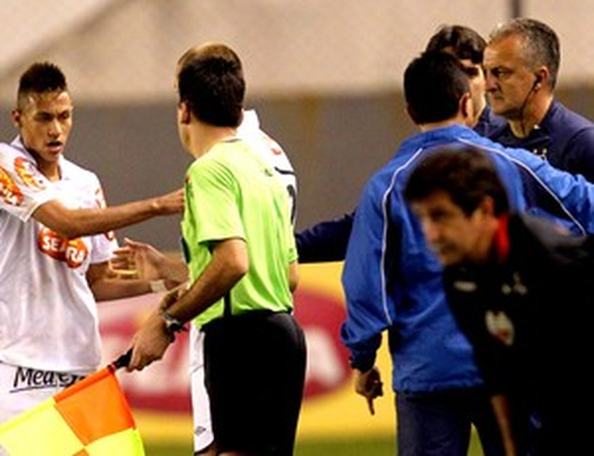
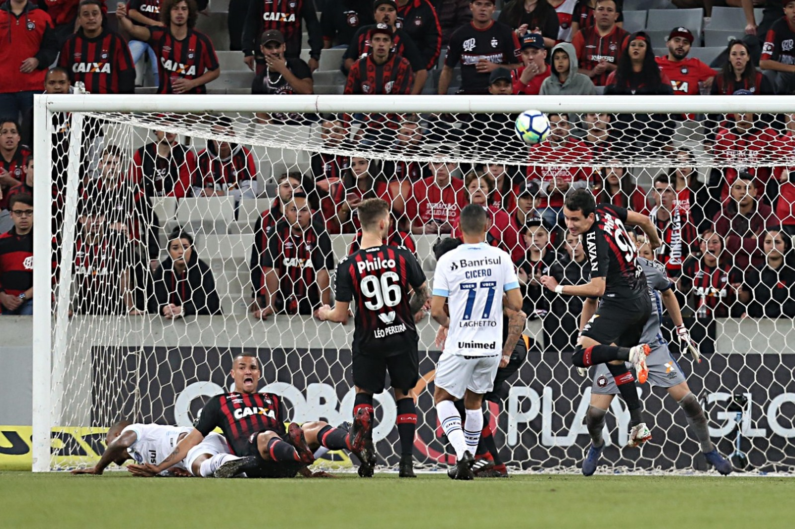

"Moleque do c*", "traição", "irresponsáveis"... treinador teve desentendimentos internos em passagens recentes por Santos, Atlético-MG, Palmeiras e São Paulo 
Em entrevista exclusiva, Tite faz balanço do ano da seleção brasileira, analisa o momento de Neymar, explica planejamento para a Copa América e diz o que pensa de promessas como Vinicius Junior, Lucas Paquetá e Rodrygo
Fluminense não teve pênalti marcado a seu favor até a rodada #32. Grêmio não teve pênalti assinalado contra sua defesa. Dos 80 penais, 18 cobranças foram desperdiçadas 